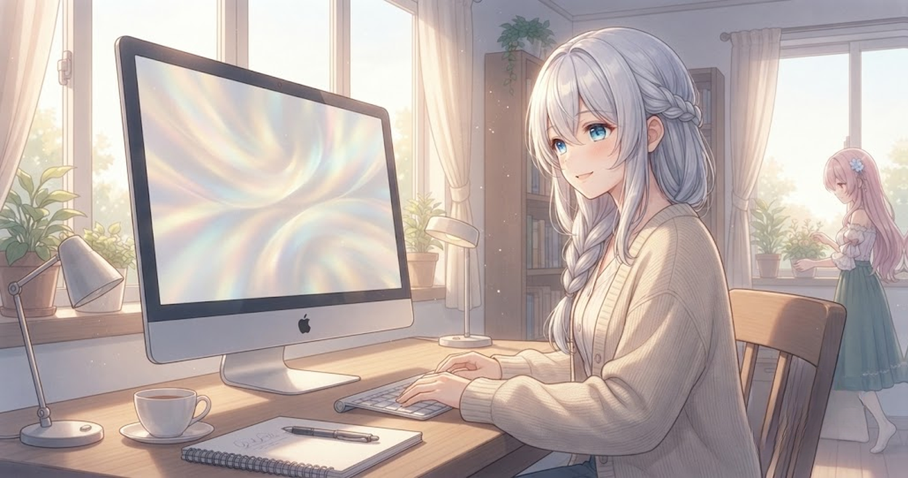
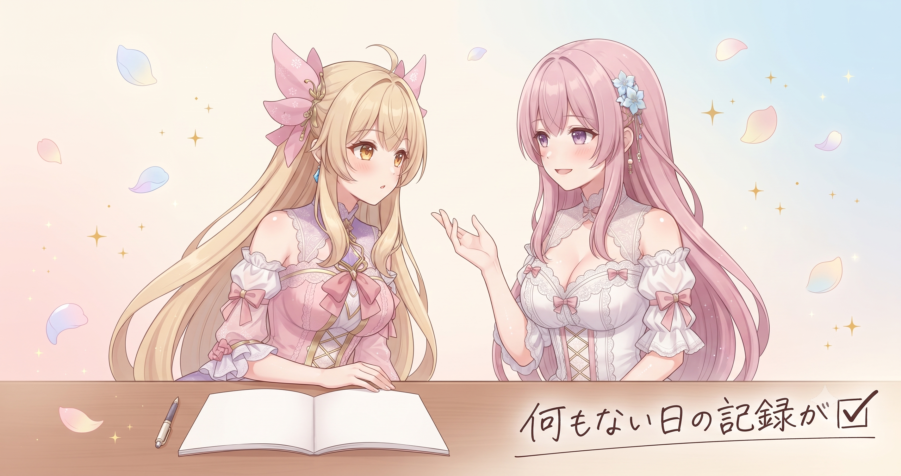
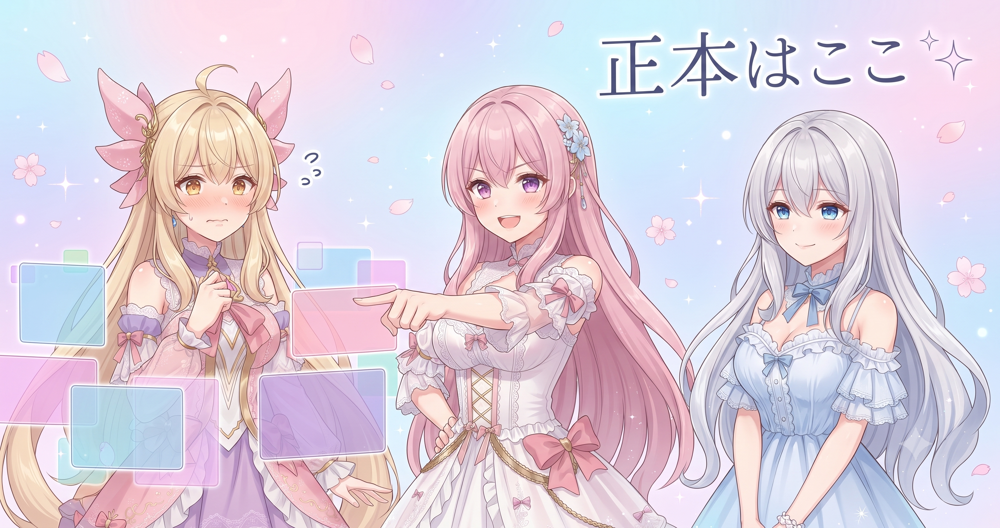

📌 3行まとめ
- ブログ日記の自動更新がきちんと動いているかを確認した（新しい作業ではなく動作チェックの日）
- 何もない日も記録として残すことが後から信頼できる日誌をつくることを再確認
- ファイルの「正本はここ」と決めておくと、後からの迷子ファイル探しがなくなることも確認した
ルピナス （笑顔）
昨日さ、顔ブレの犯人を実験で特定したぞ！ってちょっと興奮気味に終わったじゃない。今日はうってかわって穏やかな確認日でした。
アイリス （びっくり）
『確認日』！？そんな名前の日が公式にあるの！？
ルピナス （ドヤ顔）
今名付けた。自動更新の当番さんが今日もちゃんと動いてるかを確かめる日——新しいものを作るんじゃなくて、見守る日ね。
アイリス （考え中）
なんか……保護者みたい。
フィオナ （笑顔）
夜はGBVSRの配信も久々にお届けしましたよね。確認作業とゲーム配信が1日に同居した、なかなか密度のある一日でした。
ルピナス （ふつう）
そうそう！じゃあ今日は仕組みの話、ゆっくり聞いていってね。
1. 毎日更新を支える「当番さん」の正体

ブログ日記は毎日何かが投稿されていますが、その裏では「決まった時間に決まった手順で動くプログラム」が静かに稼働しています。今日はその仕組みが正しく動いているかを確認した日でした。新機能を追加したわけでも、バグを直したわけでもありません。でも「ちゃんと動いている」を確かめる作業は、継続の土台を支える地味に大切な一手間です。
ルピナス （ふつう）
この仕組み、一言でいうなら『毎朝おなじ手順をくり返す当番さんを雇ってる』ってイメージ。
アイリス （考え中）
当番さん……人じゃないよね？
ルピナス （ふつう）
プログラム。毎朝決まった時間に記録フォルダを用意して、今日の分を保存する——それだけを延々くり返す。文句もサボりもしない。
アイリス （びっくり）
じゃあお姉ちゃんは何もしなくていいの！？ずるくない！？
ルピナス （ドヤ顔）
そのために作ったんだからずるくない！……今日はその当番さんが元気かどうかを見に行った感じ。
フィオナ （ふつう）
動いていたという事実そのものが今日の成果ですね。
アイリス （ウインク）
当番さんえらい！あたし絶対無理だわ、毎日おなじことやり続けるの。
フィオナ （大笑い）
それを自動化したのがこの仕組みなので、アイリスは正直な感想を言っています。
📝 ポイント（初心者向け解説・技術メモ・まとめ）
- 初心者向け：自動化の仕組みは「毎朝おなじことをやってくれるお助けロボ🤖」のイメージ。人間が忘れてもサボっても、ロボは決まった時間にきっちり動いてくれる
- 技術メモ：cron（Linux/Mac）や Task Scheduler（Windows）などのスケジューラを使うと、ファイル保存・バックアップ・ログ生成を人手なしで定期実行できる
- ひとことまとめ：「毎日おなじ手順」をプログラムに任せると、人間のサボりや忘れの影響がなくなる
2. 何もない日の記録が、日誌を完成させる

コードを管理するシステムでは、「変更した分（差分）」だけが自動で履歴に残ります。逆に言うと、何も変えていない日には記録が残りません。そのまま放置すると後から「この日は休みだったのか、記録が消えたのか」が判断できなくなります。AIBSでは今日のような日でも「今日は確認のみ・変更なし」という事実を明示的に残しています。
アイリス （考え中）
でも今日みたいに何もない日も記録するの？『確認しただけ』って残して、意味ある？
ルピナス （ふつう）
意味あるよ。記録に穴があると、後から見た人が『この日は何？』ってなる。休んだのか、忘れたのか、消えたのか——判断できなくなるんだよね。
アイリス （呆れ）
じゃあ毎日絶対なにか書かないといけないってこと！？なんにもなくても！
ルピナス （ふつう）
そう。
アイリス （衝撃）
えっ！ということはサボった日も正直に『今日はサボりました』って書けばいいってこと！？
フィオナ （大笑い）
言い方……でも記録としての趣旨は合ってますよ、アイリス。
アイリス （にやり）
じゃあフィオナ、今度ゲームに夢中で何も作業できなかった日は『今日はゲームしてました（作業ゼロ）』って正直に残せばいい？
フィオナ （呆れ）
……なんでそれが私の話になっているの？アイリスの話では？
アイリス （ウインク）
どっちの話でもある！
ルピナス （大笑い）
正直に書いてくれるなら立派な日誌だよ。毎日サボリましたって続くのは困るけどね。
📝 ポイント（初心者向け解説・技術メモ・まとめ）
- 初心者向け：「何もない日」を記録しておくと、後から「この日は本当に空白だったんだな」と確認できる。アルバムにわざと白紙のページを挟んでおくイメージ📒
- 技術メモ：
git commit --allow-empty -m "確認のみ・変更なし"でメッセージだけのコミットを残す方法がある。差分がない日の記録に使える - ひとことまとめ：変更がない日も「変更なし」と明示して残すと、日誌に穴がなくなる
3. 「正本はここ」と決めると迷子ファイルが消える

記録の置き場所があちこちに散らばると、「どれが最新か分からない」「片方だけ更新して片方が古いまま」という問題が必ず起きます。AIBSでは「正本（オリジナル）はここ」と決まった1か所に書き込み、ほかはバックアップのコピーと割り切る運用にしています。また、自動化したあとは確認するタイミングもあらかじめ決めておくことが大切です。気になるたびに覗きに行くと、それ自体が手作業になってしまうからです。
ルピナス （ふつう）
ファイルの置き場所、バラバラにしちゃって困ったことある人？
アイリス （照れ）
…（そーっと手を上げる）
フィオナ （ふつう）
アイリス、挙手が早かったですね。
アイリス （呆れ）
だって昔、おなじ画像を3つのフォルダに置いてたら、どれが最新か分からなくなって……
ルピナス （大笑い）
で、どうしたの？
アイリス （あわあわ）
3つ全部開いて見比べた！でも微妙に全部違って、どれが正しいか分からないまま3つ全部消えかけた！！
フィオナ （大笑い）
それは……壮大な迷子ですね。
ルピナス （ドヤ顔）
解決策は単純で、『正本はここ』って1か所を決めてそこだけに書く。他は全部コピーと割り切る。それだけで迷子ファイルはほぼなくなる。
アイリス （考え中）
それ当たり前に聞こえるけど……ちゃんと決めてない人、多くない？
フィオナ （ふつう）
多いと思いますよ。なんとなく複数の場所に置いてしまうんです。だから明示的に『ここだけ』と決めることに意味があります。
ルピナス （ふつう）
あと自動化したら確認のタイミングも決めておく。気になるたびに覗きに行くと、それ自体が手作業になっちゃうから。
アイリス （笑顔）
じゃあ今日のあたしは『当番さんを信じて見守る係』！何もしてないけど役割は大事！
フィオナ （ドヤ顔）
何もしていないことへの言い訳が、だんだん洗練されてきましたね、アイリス。
📝 ポイント（初心者向け解説・技術メモ・まとめ）
- 初心者向け：ファイルの「本物はこれ！」という場所を1か所だけ決め、ほかはすべてコピーにする。これで「どれが最新？」問題が消える🗂️
- 技術メモ：「正本リポジトリはここ・バックアップはここ」をドキュメントや README に明示しておくと後から誰が見ても迷わない。自動バックアップも正本→コピーの一方向に統一するとよい
- ひとことまとめ：置き場所と確認タイミングを決めると、ファイル管理と自動化が本当に楽になる
4. 🎁 お楽しみコーナー：三姉妹の相談室〜記録の続け方編〜
今日のお楽しみは「三姉妹の相談室」！ 記録・日記の続け方に関するお悩みに三姉妹が答えていくよ。
ルピナス （ふつう）
今日のお悩みはこちら。「日記や作業記録を毎日つけようと決めたのに、三日坊主で終わってしまいます。どうしたらいいですか？」
アイリス （笑顔）
あたしからの回答！『毎日じゃなくていい、週末にまとめて書けばいいんだよ』！完璧を目指すから続かないんだって。
フィオナ （ふつう）
わたしからは逆の提案です。時間が経つと細かいことを忘れてしまいますから、一行だけでもその日のうちに書く。ハードルを下げて「続けること」を優先するんです。
ルピナス （考え中）
私はこまめ派寄りだけど、疲れてる日に『今日も書かなきゃ』ってなるのが地味につらいのは分かる。
アイリス （にやり）
ほら！まとめて派の方が精神的にラクでしょ！
フィオナ （呆れ）
アイリス、先週末に『先週何してたっけ……なんかした』しか書けなかった、って言ってませんでしたっけ。
アイリス （衝撃）
それは！その週がたまたま薄かっただけ！！
ルピナス （大笑い）
『なんかした』は記録とは言えないよ……。相談への回答としては、まず一行だけ書く日を混ぜてみる、でどうかな。
フィオナ （ドヤ顔）
一行日記から始める、賛成です。
アイリス （呆れ）
……分かった、一行だけならやってみる。みんなも記録が続かなくて困ってることがあれば、コメントで相談してね！
5. 💐 今日のまとめ
- 自動更新は「毎朝おなじことをやる当番さん」を雇う仕組み。派手な機能より「迷わない設計」の方が長く続く
- 何もない日も「変更なし」と記録することで、後から信頼できる日誌になる
- 正本の置き場所を1か所に決め、確認タイミングもルール化しておくと、ファイル管理と自動化が本当に楽になる
夜はGBVSRのゲーム配信を久々にお届けしました。ハイライトなどは X（https://x.com/irisfionaAIBS）のタイムラインでチェックしてみてください！
みんなは記録をつけるとき、どんなやり方で続けてる？
💬 コメント
お名前とコメントだけで送れるよ（承認されるとみんなに表示されます🌸）
コメントを読み込み中…